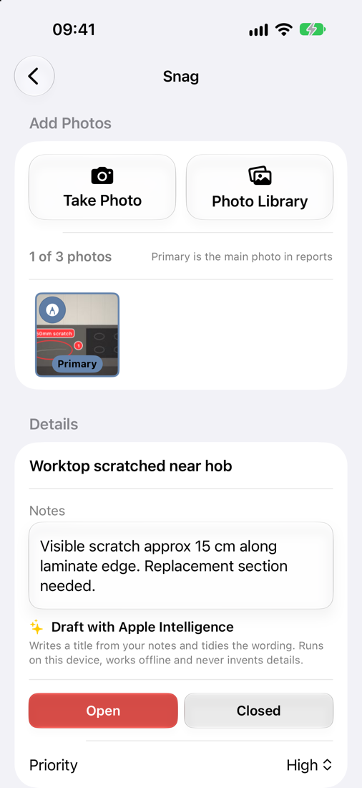
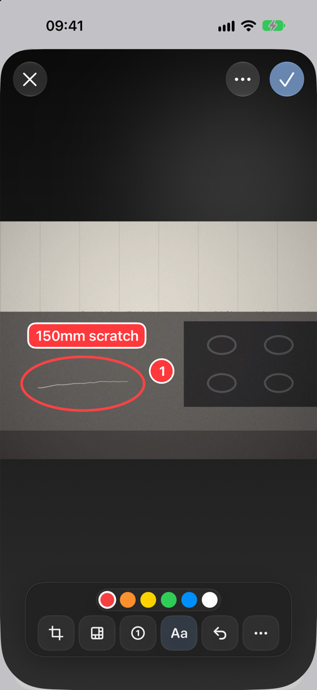

Photos and Markup
Photos are one of the most important parts of a snag. They identify the issue, support follow-up work and make the report much easier to act on.
Good snag photos are:
- clear and well lit
- close enough to show the issue
- wide enough to show where it is, where needed
- checked before you move on
Adding photos
Each snag can hold up to three photos. On a new or saved snag:
- tap Take Photo to use the camera, or
- tap Photo Library to choose existing photos, or
- on iPad, drag images in from another app.
The first photo becomes the Primary photo. It is the main image on reports, in the long-press preview and on the Share Snag image. To change it, press and hold another photo and choose Make Primary. To remove a photo, press and hold it and choose Delete Photo.
To keep a copy of every photo you take in your iPhone’s Photos library, turn on Settings → Preferences → Save New Photos to Library.

Marking up a photo
Tap the pen button on a photo thumbnail to open the editor. Your edits never overwrite the original photo. You can reset them at any time.
| Tool | What it does |
|---|---|
| Draw | Draw freehand in the chosen colour. Hold still at the end of a stroke to snap it into a neat shape. |
| Crop | Trim the photo. Tap Apply Crop when you are done. |
| Pixelate | Paint over faces, number plates or other private details to blur them into a mosaic. |
| Number | Drop numbered markers (1, 2, 3…) to point out several issues in one photo. |
| Text | Add a short label, such as a measurement (“550mm”). |
| Undo | Step back through your last changes. |
| ⋯ | Reset Edits, or Share the edited or original image. |
Drag a number or text marker to move it. Tap it to edit or delete it. Tap the tick to save.

Shape snapping
Draw a line, circle, oval, rectangle or arrow, then hold your finger or Pencil still at the end of the stroke. Snaglite replaces the rough stroke with a clean shape. If you lift straight away, the stroke stays freehand.
Apple Pencil
On iPad with Apple Pencil:
- once you draw with the Pencil, only the Pencil draws. Your finger can then pan and zoom without leaving marks. This also follows the iPad’s own “Only Draw with Apple Pencil” setting.
- an Eraser tool appears in the toolbar once a Pencil is in use. If your Pencil’s double-tap is set to switch to the eraser, double-tap works too.
- squeeze Apple Pencil Pro to bring up the tool palette next to the tip (when the iPad’s squeeze setting is Show Tool Palette)
Using markup well
- Keep marks simple. One clear circle is better than several scribbles.
- Do not cover the defect itself.
- Use numbers when one photo shows more than one issue.
- Pixelate anything personal before you share a report outside your company.
- Check the final image before saving.
PDF attachments and drawings have their own markup tools. See Attachments and Drawings.